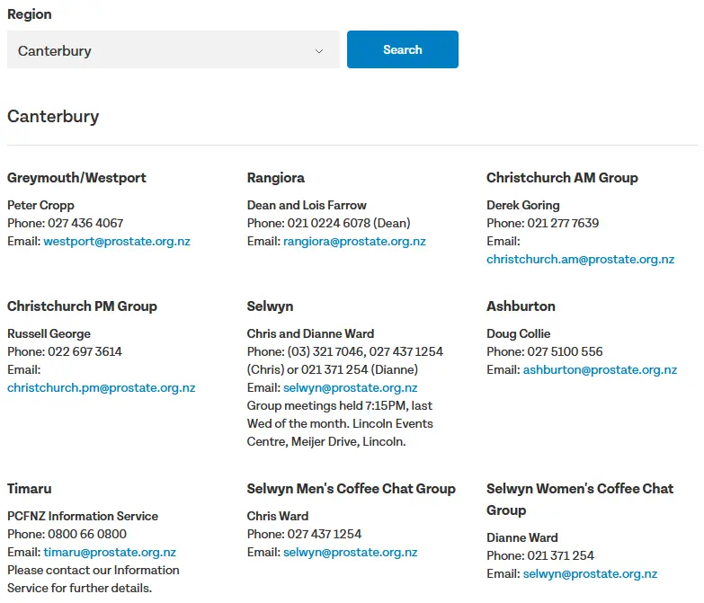

Getting Support

Overview
Our local support leads are here to connect you with trusted, compassionate support within your community. Whether you’re newly diagnosed, undergoing treatment, living beyond prostate cancer, or supporting a loved one, you’re not alone.
Each PCFNZ representative brings lived experience and a deep understanding of the journey. From regular group meetings to informal connections and one‑on‑one conversations, they’re here to support you and your whānau in a way that works best for you. Find your local contact below and reach out when you’re ready.
If you have questions about medical treatment, please contact your usual healthcare provider, as they are best placed to give you clinical advice.
Section 1 of 2